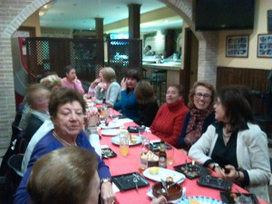
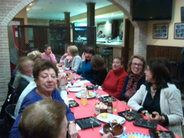

Las vísperas de Navidad hemos cenado juntas el grupo del Taller de Literatura, nos lo hemos pasado bien, la cena ha estado estupenda, y compartir en la mesa un rato de tertulia, eso ha sido lo mejor.
Aquí dejo unas fotografías.
 

VIAJE A TOLEDO PARA VER EL "CASCANUECES"
XIII CICLO DE DANZA
COREOGRAFÍA y DIRECCIÓN: Gediminas Tarandá
En la fiesta de Navidad, el mago Drosselmeyer tiene preparadas para los niños muchas sorpresas. Pero lo más interesante es lo que le pasa a Clara (en versión rusa Masha) cuando la fiesta termina: los terribles ratones la atacan, su regalo -el juguete Cascanueces- la salva y se convierte en el Príncipe. Así juntos irán, a través de las nieves, al maravilloso país de sus sueños.
El Ballet Imperial Ruso Creado en 1.994 por iniciativa de Maya Plisetskaya, que durante muchos años fue su Presidenta de Honor y Asesora General, tiene como Director Artístico del Ballet a Gediminas Tarandá, quien, antes de crear la compañía, fue solista principal del Teatro Bolshoi de Moscú y estudió la carrera de coreógrafo bajo la dirección de Yury Grigorovich.
El ballet muy bueno y el espectáculo en general muy bonito. Una noche estupenda paseando por Toledo y contemplando ese bonito alumbrado de Navidad.

{kind=link}

Comentarios